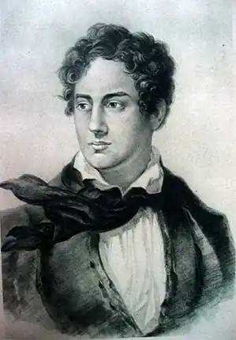
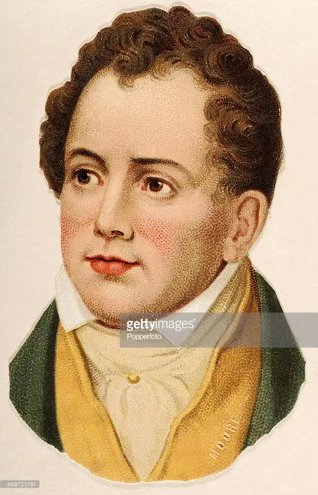
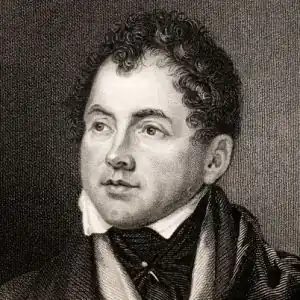

Народився 28 травня 1779 році в Дубліні, закінчив Дублінський університет, Трініті-коледж, 1798). Повстання "Об'єднаних ірландців" у тому ж році і кару в 1803 його приятеля студентських років Р. Еммета зробили Мура пристрасним патріотом Ірландії.
Закінчив Дублінський університет, Трініті-коледж, 1798). Повстання "Об'єднаних ірландців" у тому ж році і кару в 1803 його приятеля студентських років Р. Еммета зробили Мура пристрасним патріотом Ірландії.
В 1799 році він переїхав у Лондон, де його переклади з Анакреонта (1800) мали гучний успіх. Свій перший збірник віршів (1801) випустив під псевдонімом Thomas Little (Томас Маленький). Ірландські мелодії (Irish Melodies) Мура виходили окремими випусками з 1808 по 1834; для першої серії музику до текстів писав Д. Стівенсон, для другої — Р. Бішоп. Деякі з включених в Мелодії пісень досі популярні. За збори "східних" казок у віршах Лалла Рук (Lalla Rookh, 1817) видавець, не читаючи рукописи, запропонував Муру 3000 фунтів. У великому прозовому доробку Мура виділяються прекрасні біографії Шерідана (1825), Е. Фіцджеральда (1831) і — безперечний шедевр в цьому жанрі — Листи і щоденники лорда Байрона (The Letters and Journals of Lord Byron, 1830). Мур настільки близько здружився з Байроном, що той передав йому рукопис своїх Записок. Після смерті Байрона Мур її спалив, породивши не затихаючі досі гарячі суперечки. У 1803 Мур відплив на Бермуди в якості реєстратора призовогосуда. Залишивши на островах свого представника, він повернувся в Англію. Пізніше представник присвоїв 6000 фунтів, і Муру, який за нього відповідав, довелося в 1819-1822 щоб уникнути арешту жити в Європі. У 1811 році він одружився на ірландській актрисі Елізабет Дайк. Їх щасливий союз був затьмарений тим, що вони пережили всіх своїх дітей. Помер Мур Слопертон-котеджі поблизу Бонвуда (графство Вілтшир) 25 лютого 1852.